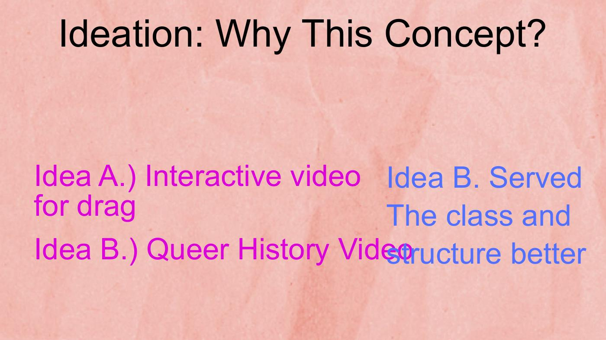
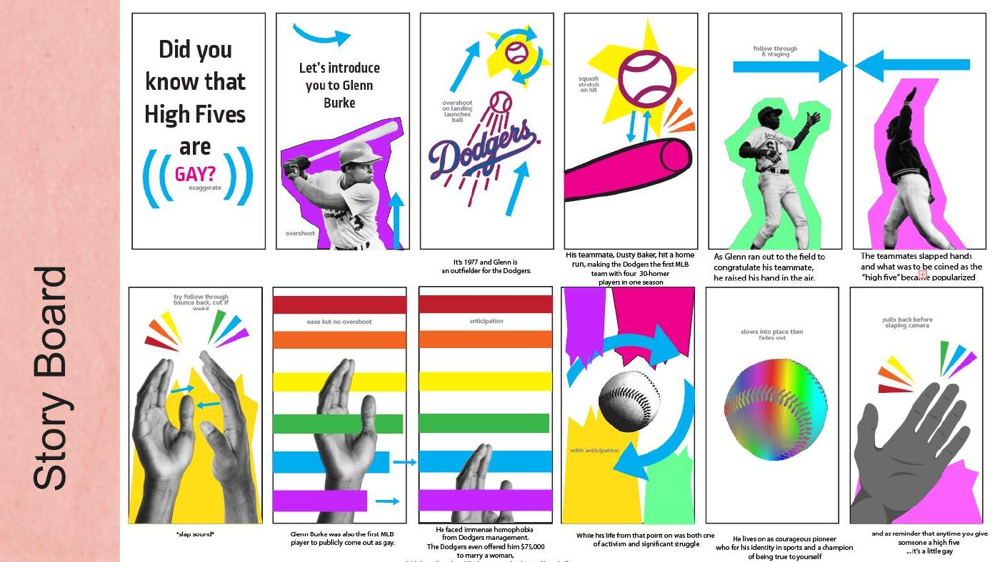
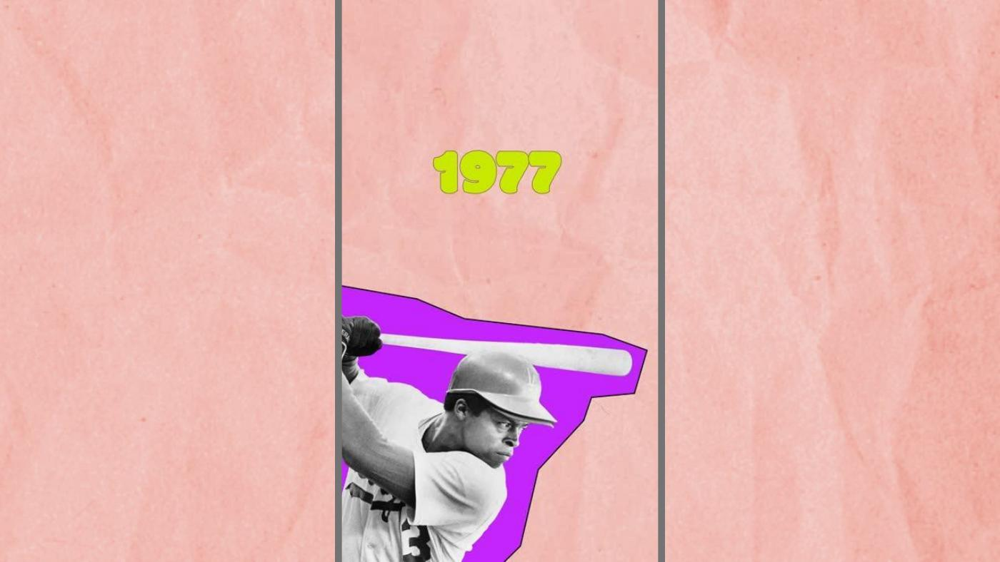
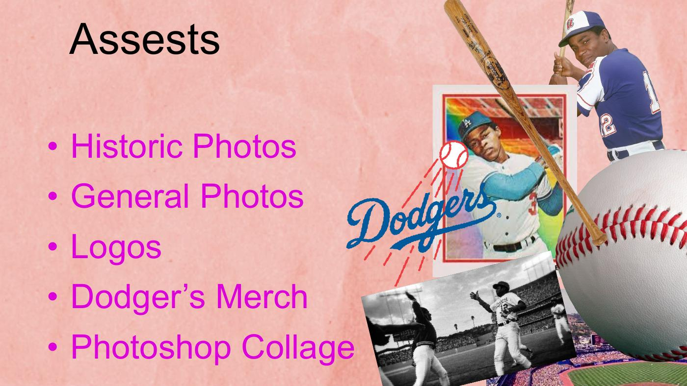

← All projects · Motion · 02
After Effects Final
ft. Glenn Burke — the first openly gay MLB player and credited co-inventor of the high five. An animated short that uses Photoshop collage and disciplined AE animation to give a quiet historical figure a louder presence.

History flattens its queer protagonists.
Queer figures who shaped mainstream culture — like Glenn Burke, co-inventor of the high five — are routinely flattened out of the history that records their contributions. Motion can re-introduce them with the energy their stories deserve.
Archival photography meets disciplined AE animation.
An animated short that uses After Effects and Photoshop collage to retell a slice of queer sports history — the story of Glenn Burke, the first openly gay MLB player and credited co-inventor of the high five.
The piece moves from archival photographs to motion typography, using collage, masking, and animated principles to honor a story that mainstream sports history has largely ignored.
Who it's for.
- Design and motion students learning narrative animation pacing.
- Queer audiences interested in history that is rarely told in athletic or institutional contexts.
- Sports fans encountering the origin of the high five as a queer story.
animation principles (squash/stretch, anticipation, ease, secondary motion) read clearest when the underlying imagery is still. Early drafts had floating shapes and glitchy keyframes; cleaning those out let the photographs and typography do the emotional work.
From two ideas to one story.
I started with two ideas: an interactive drag-themed motion piece and a queer-history short. Drafting both quickly showed me the Glenn Burke concept served the class structure better — there was a clear protagonist, a clear arc, and existing archival imagery that could carry the story.




Use motion to give a quiet historical figure a louder presence.
The final piece pairs archival photography, Dodgers/A's-era ephemera, and Photoshop collage assets with disciplined After Effects animation — entrances, transitions, and a closing "high five" beat that ties Burke's invention back to his identity.
The reflection from this project — "strokes are going to give me a stroke," "too many keyframes," "just a touch more" — became the basis of my personal motion style: fewer moves, better timing, more story.